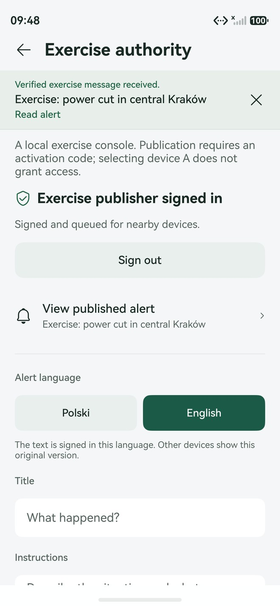
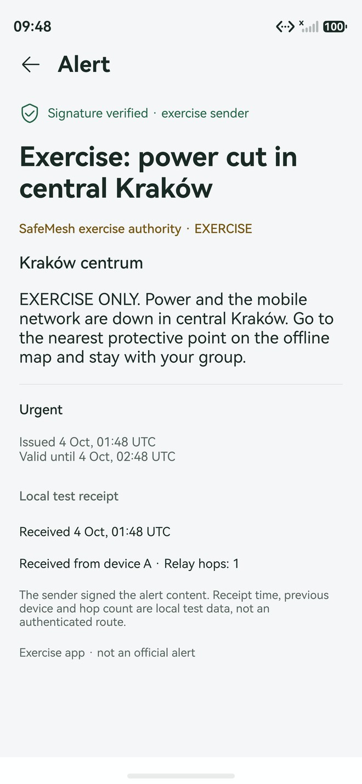
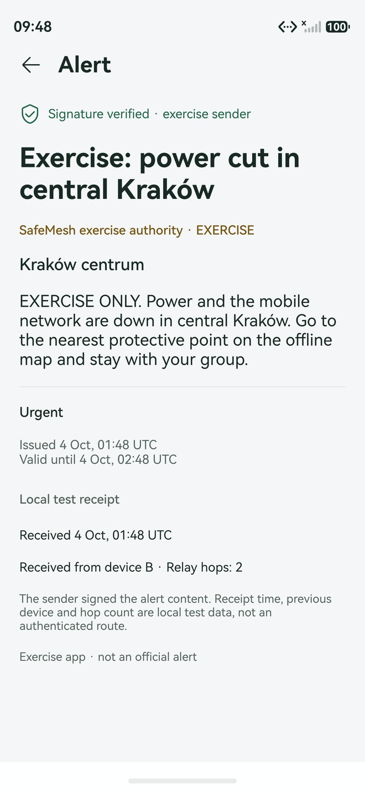
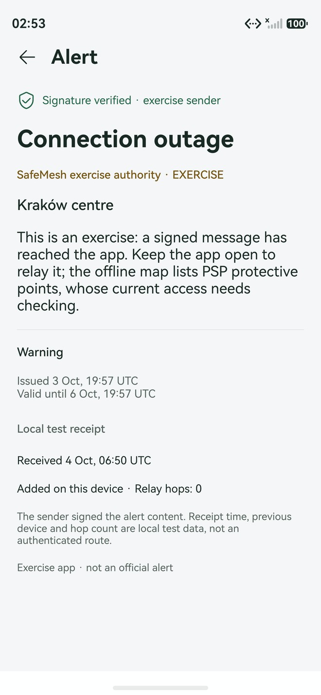
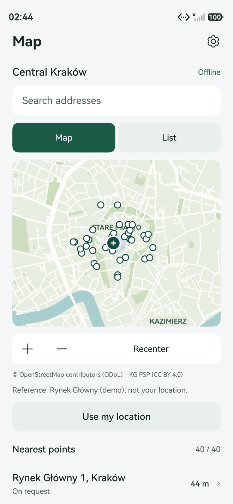
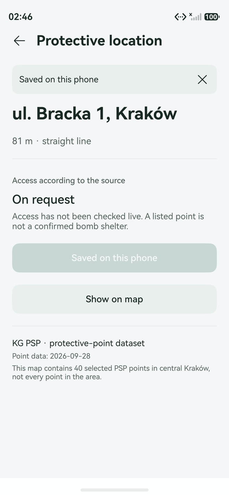
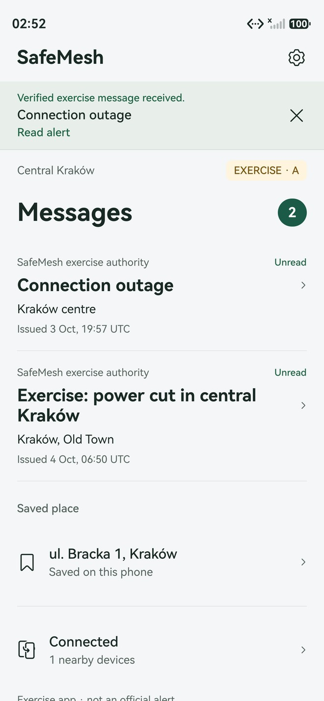
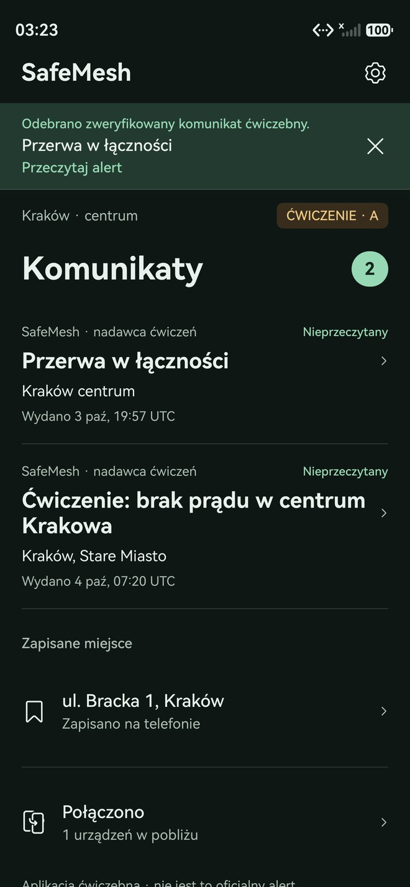

A leaves before C arrives. C gets the alert from B and verifies the signature itself.
SafeMesh
Verified emergency alerts that travel phone to phone, when the mobile network is down.
When the network fails, warnings stop, and rumours spread.
Networks fail when they matter most
In its December 2022 assessment of Ukraine, the ITU reported almost 11% of mobile operators’ base stations out of service. Floods, storms and blackouts take towers down too.
Forwarded messages can’t be trusted
A forwarded text or screenshot carries no proof of who wrote it, or whether someone changed it on the way. In a crisis, that is how rumours win.
Help is local, and needs to be offline
“Where is the nearest protective point?” has to be answerable without downloading anything, from the first launch.
People in an outage area who still need a warning they can trust, and the crisis teams, volunteer fire brigades and schools that run drills for exactly this moment.
Source: ITU, Interim assessment on damages to telecommunication infrastructure and resilience of the ICT ecosystem in Ukraine, December 2022. A historical example of the risk, not an estimate for Poland.
One native app. Three ideas that only work together.
Signed alerts
Every phone verifies an ECDSA P-256 signature against a pinned issuer key before it shows, stores or forwards an alert.
Phone-to-phone relay
Store-and-forward: each phone keeps verified alerts and passes them to the next phone in range, with delivery receipts and retries.
Offline protective points
A bundled vector map of central Kraków with 40 State Fire Service protective points. Works from the first launch.


Every phone is a verifier, not just a router.
Rejected: altered text, unknown issuer key, expired alerts. No ACK, not stored, not forwarded.
Duplicates are acknowledged again (to recover lost ACKs) but never forwarded twice. Cooperative hop budget: 8.
An ACK must match the peer, a fresh random token, the key ID, alert ID and revision. It is a receiving-app receipt, not proof a person read it.
One alert, three phones, and A and C never meet.
Real: three app processes on HarmonyOS API 24 emulators, on-device signature checks, storage, ACKs, retries and the forged-copy rejection.
Labelled stand-in: emulators have no radio, so a local test link carries the packets (A–B, then B–C, never A–C).
Full run in the demo videoBuilt to survive a hostile crowd, honest about its limits.
| If someone… | SafeMesh… |
|---|---|
| changes the text of an alert | rejects it: the ECDSA P-256 / SHA-256 signature no longer matches the canonical payload |
| invents an issuer | accepts only the pinned public key; the private key never ships in the app |
| replays an old alert | drops expired alerts and re-verifies its replay history on restore |
| floods duplicates | re-acknowledges them but never forwards them twice |
| picks device role A | gets no publishing rights: the issuer console needs an activation code |
| edits a translation | fails verification: v2 signs every language version of the text |
What signatures cannot stop
Jamming, phones that silently drop messages, or a stolen issuer key. A real deployment needs audited key custody, rotation and revocation.
Privacy
Location is optional, one-shot and foreground-only. It is never saved or relayed. Alerts carry no personal data.
Where to go, from the first launch, with no data connection.
40 protective points from the State Fire Service (PSP) dataset, central Kraków, with names, addresses and access categories.
Vector map in the app (404 KB, OpenStreetMap geometry), drawn on an ArkUI Canvas. No tile server.
Search all 40 addresses, with or without Polish diacritics. Save a place; it survives restarts.
Distance from a labelled demo origin, or one optional foreground location fix (≤ 250 m accuracy, inside the map).
No false promises: straight-line distance, no route guidance, no claim that a shelter is open.

© OpenStreetMap contributors (ODbL) · Komenda Główna PSP (CC BY 4.0). PSP data 2026-09-28, OSM snapshot 2026-10-03.
Usable by everyone, in the moment it matters.


Polish and English
Follows the phone’s language by default; signed translations switch with it.
Light, dark, system
Saved choice, system bars match.
Large text
Layouts checked at the system 1.45× preset, up to 2×.
Screen readers
Labels on every control; new alerts and results are announced.
Vibration
Short for new alerts, stronger for critical; respects silent mode.
Screen stays on
Only while a relay link is active, so relaying does not pause.
Built on HarmonyOS itself, not on a generic web view.
NearLink Kit
Capability check, advertising, scan, reliable data channel, MTU framing.
Crypto Architecture Kit
On-device ECDSA P-256 verification; random delivery tokens.
Network Kit
WebSocket test link between emulator apps; loopback issuer client.
Location Kit
One-shot foreground fix behind a runtime permission.
ArkData preferences
Chunked, generation-committed storage that survives interrupted writes.
Accessibility Kit
Spoken announcements for new alerts, expiry and results.
Localization Kit
System language, locale-aware times, PL/EN resource managers.
Sensor Service Kit
Vibrator presets with a timed fallback; alarm usage for critical alerts.
ArkUI + AbilityKit
Keep-screen-on window flag, SymbolGlyph icons, Canvas map, dark mode, font scale.
API levels · minimum API 20, as the challenge requires; built and validated with target API 24 (HarmonyOS 6.1.1) in DevEco Studio.
Five permissions, each used · ACCESS_NEARLINK, APPROXIMATELY_LOCATION, LOCATION, VIBRATE, INTERNET (loopback test link and issuer).
Ready for HarmonyOS’s own short-range radio.
Capability
isNearLinkSupported() on API 23+; the system capability on API 20–22, where that call does not exist.
Advertise + scan
A custom application UUID; scan by the peer’s exact device name, because API 24 requires a discovery filter.
Reliable channel
dataTransfer with bounded framing, so one alert can span the negotiated MTU.
Same relay rules
The RelayTransport contract: verify, store, ACK, forward, exactly as on the emulators.
Done
Adapter implemented and covered by host tests with platform mocks: discovery, confirmed connections, split and merged reads, cleanup.
Not yet proven
Emulators have no NearLink radio. The physical A → B → C test on phones has a step-by-step runbook: docs/PHYSICAL_TESTING.md.
Background
The NearLink continuous-task mode arrives in API 26. Until then relaying runs in the foreground, and we say so in the app.
One codebase. HarmonyOS and the open-source Oniro.
src/harmonyos: the NearLink Kit adapter.src/oniro: a NearLink stub.hvigor picks the adapter through each target’s sourceRoots; the root hvigorfile.ts adjusts the manifest for Oniro only. Tests keep NearLink Kit out of the shared code.
Why it matters
Public-safety software should be auditable and shippable on hardware you control. The Oniro product builds with the open-source toolchain (oniro-app), signs with the public OpenHarmony debug key and runs on the Oniro emulator; a team member ran it there.
Small, testable layers. The radio never decides trust.
AlertViewModel inbox · RelayViewModel transport + delivery · AuthorityViewModel issuer · MapViewModelAlertProtocol signature + policy · DeliveryProtocol wire format · DeliveryQueue ACKs + retries · LocalStore · DeviceLocation · AuthorityClientNearLinkTransport on phones · EmulatorTransport for the labelled labLab services (laptop, loopback only)
demo-authority-server.mjs: holds the exercise private key, needs a bearer token, returns signed envelopes.
mesh-lab-server.mjs: routes only A–B and B–C, can drop or inject packets for fault tests. Stores and ACKs nothing.
Bounded by design
4 KiB canonical alert, 8 peers, 128 alerts per peer, 4 packets per batch, 3 attempts, hop budget 8.
Every claim has a test, a log or a recording behind it.
host tests in 16 suites, running the real ArkTS sources
ArkTS errors, in both products’ source sets
Code Linter issues
assertions over captured native evidence (v1.4 relay run)
full-page screenshots: 17 screens × EN/PL × light/dark
lines of tests for 8k lines of ArkTS
A fresh clone from GitHub builds and passes the same checks. Every release has a SHA-256, and the commit history shows each step since 3 October, 18:07. AI-assisted development is documented in AI_WORKFLOW.md.
A narrow prototype that works, and says what it doesn’t do yet.
- Signed alerts, verified on every phone
- Store-and-forward with ACKs and retries
- Forged, expired and duplicate handling
- Issuer console with activation code
- Offline map, search, saved place
- PL/EN, dark mode, large text
- Radio between emulators: a local test link
- Issuer: a local exercise signing service, not RCB
- Alerts are exercises, marked in the app
- NearLink A → B → C on physical phones (runbook ready)
- Background relaying with API 26 NearLink tasks
- Issuer key rotation and revocation
- Map packs for any city (refresh script exists)
NearLink phones without internet: A sends a signed alert to B, A leaves, B later delivers it to C. Logs tagged SAFEMESH_TRANSPORT_* record every link change and error; delivery counters show pending, acknowledged and retried alerts.
How SafeMesh meets the six criteria.
| Criterion | Evidence |
|---|---|
| Originality · 20% | Verification on every hop plus store-and-forward, so trust survives forwarding; one app also carries the offline map. |
| Usefulness · 20% | Human-Centric (lead) and Spatial: keeps a verified warning and local protective points usable without a network. Bilingual and accessible. |
| Technical execution · 20% | 177 tests, 0 ArkTS errors, 0 lint issues, bounded protocol, failure handling (lost ACKs, restarts, timeouts), no secrets in the repo. |
| Platform use · 20% | NearLink Kit adapter, Crypto, Network, Location, ArkData, Accessibility, Localization, Sensor and window APIs; a separate Oniro product. |
| Demo · 10% | Three separate apps on emulators in one synchronized recording; stand-ins labelled; 68-screenshot gallery. |
| Reproducibility · 10% | README, one-command checks, release HAP with SHA-256, fresh-clone build, scripted demo and gallery, commit history, AI_WORKFLOW.md. |
The network can fail.
The warning still arrives.
Code · github.com/carrotly-technologies-2026/SafeMesh
Install, video, deck · the latest GitHub release
Every screen · docs/gallery in the repository